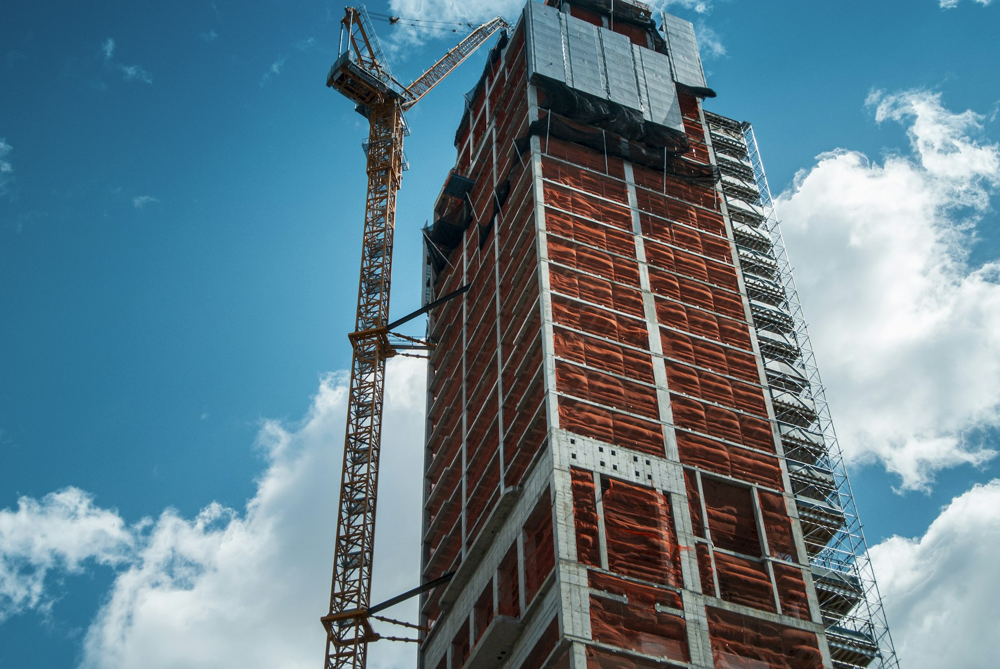

Project 06 · Building engineering
New SSK Building
Panchpara, Sankrail, Howrah

The assignment
Project overview
Building DPR preparation for the new SSK at Panchpara under Sankrail Block in Howrah District.
Consultancy scope
- Soil investigation and site survey.
- Foundation design.
- Building drawings.
- Detailed estimate and Building DPR preparation.
Key services
Letter of acceptance cum work order dated 15 July 2024. This page describes the documented consultancy assignment; it does not imply that construction is complete.
- Location
- Panchpara, Sankrail, Howrah
- Commissioning organisation
- Howrah Zilla Parishad
- Service
- Detailed Project Report consultancy